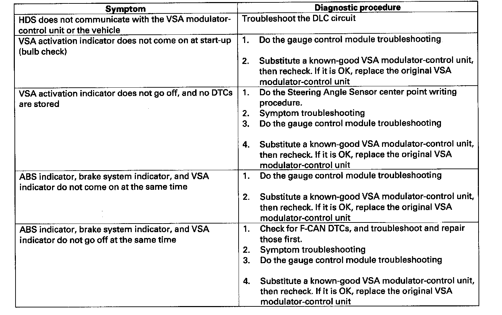

Symptom Troubleshooting Index
Symptom Troubleshooting IndexWhen the vehicle has one of these symptoms, check for a diagnostic trouble code (DTC) with the HDS. If there is no DTC, do the diagnostic procedure for the symptom, in the sequence listed, until you find the cause.
